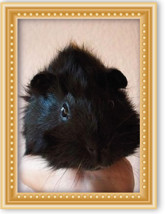

Ele é o protetor das crianças anjo por seu papel no Zohar como o anjo que conduziu o povo de Israel no deserto para a Terra Prometida. Ele orienta as crianças tanto na Terra como no Céu. Ajude as crianças Índigo e Cristal para superar os obstáculos em sua evolução. Os pais podem pedir Metatron para orientá-los para ajudar seus filhos na sua educação, espiritualidade e desenvolver suas habilidades psíquicas.
Lutador incansável que sempre enfrenta o mal. É servido por os anfitriões dos anjos celestiais, aqueles que colaboram na manutenção da paz na Terra.
O Arcanjo Miguel é, acima de tudo, o inimigo de Satanás. Ele também é o anjo da morte, como é dito para oferecer as almas a chance de se redimir antes de morrer.
Seu terceiro trabalho está pesando almas em perfeito equilíbrio no dia do Juízo. Ele também é o guardião da Igreja universal.
O arcanjo Gabriel é descrito quase sempre em seu papel como mensageiro por ser o portador da notícia da Encarnação.
Sua imagem representa pureza e anunciou através de seu vestido branco, um lírio ou múltiplas lírios em suas mãos e andrógina e delicado.
Entrega de flores a Maria representa a pureza, virgindade, inocência, amor e harmonia, virtudes que incorporam tanto o Arcanjo Gabriel e Virgem Maria.
Foi encarregado de anunciar a Maria que ela estava esperando um filho ajuda a mulheres grávidas.
Reúna as pessoas à parte.
Ele é o mensageiro celestial.

O arcanjo Raphael é quase sempre representado como um peregrino. Esta imagem é uma referência para a história bíblica de Tobias, que também apoia a ideia de San Rafael Arcanjo como um curandeiro.
A cana ou pessoal que transporta representa o apoio vontade e espiritual necessária para percorrer o caminho da vida.
É que protege o doente, é sempre com aqueles que estão doentes, enquanto houver dor, doença. Ele também protege e cuida casamentos abençoados felicidade do lar.

O nome Uriel significa "Fogo de Deus". Ela representa a onipotência do espírito de vida. Seu atributo é uma chama que representa sua missão de aumentar a consciência dos seres humanos com o fogo de verdade.
Você pode trazer um livro ou folhear.
Este atributo representa seu papel divino de observador. Mantenha o controle de sentimentos, pensamentos e ações dos seres humanos em sua jornada pela vida.
Ele é responsável pela terra e os templos de Deus. Deve ajudar pessoas que enfrentam fases difíceis, você cuidar da sua integridade e alivia a fadiga.

Jophiel é o arcanjo da sabedoria, iluminação e intelecto. Alguns pensam que foi ele quem expulsou Adão e Eva do Paraíso e, com uma espada flamejante, estava guardando o caminho para a Árvore da Vida. Ao contrário de Michael, Gabriel e Rafael, é um arcanjo Jophiel tem sido muito pouco, disse o homem, um arcanjo cuja natureza é investido com o mistério.
É um brilhante, estável e capaz de grande clareza mental.

Arcanjo Chamuel é conhecido como o anjo do amor. Seu nome significa "Aquele que vê Deus" ou "Aquele que busque a Deus." Sua tarefa é encorajar os seres humanos gratidão a Deus e amor incondicional e abnegado. Como o Arcanjo do amor, você pode pedir a sua ajuda e presença se você quiser integrar em sua vida seus dons e serviços virtudes.
Apoiar as pessoas solitárias que sofrem de uma falta de amor e respeito. Protege contra a inveja e elimina a amargura.

Arcanjo Zadkiel é "a justiça de Deus." Ele também é conhecido como Zadkiel, Hesediel, Zadakiel, Zedekiel, Zedekul, Sachiel e Tzadqiel. Em hebraico, o seu nome está escrito צדקיאל.
Como a "justiça de Deus" é também o anjo de bondade e misericórdia. Ele é o arcanjo da liberdade, que lembra o ser humano tem livre arbítrio para agir e tomar suas próprias decisões. Como Deus é infinitamente justo, Zadquiel representa a capacidade divina de perdão.
 Em amuletos ou talismãs da vida cotidiana foram usados por reis no tempo antigo.
Em amuletos ou talismãs da vida cotidiana foram usados por reis no tempo antigo.
Sempre que eles estão vestindo um talismã, um amuleto que lhes permitiu se sentir protegida.
Eles são preparados a partir de uma pedra consagrada, couro, pergaminho, metal, osso e outros materiais.
Que forneceu a proteção e segurança para o utente, sendo fácil de transportar, porque eles são pequenos.
Estes amuletos são conspiradores, veladas e oraram por rituais de proteção, para que possa obter o poder do amuleto da proteção e se perdido não pode ser usado por uma pessoa diferente para o proprietário original.
Dependendo do tipo de proteção que você. Desejar, podemos começar a preparar amuletos e talismãs para casa para aqueles que contêm ligações de alta potência com entidades superiores.

 Mostrando traducción para Es la mezcla de hierbas y flores especialmente recolectadas y seleccionadas de las zonas más altas de la serranía y de la selva virgen del Perú. De esta forma por medio de conjuros, ofrendas a los Apus y rituales se consigue de estas el poder de purificación, limpieza corporal y del aura. Este baño es muy poderoso ya que purifica las chacras y tu campo electromagnético permitiendo que el aura se torne pura y más transparente para poder captar energías positivas.
Mostrando traducción para Es la mezcla de hierbas y flores especialmente recolectadas y seleccionadas de las zonas más altas de la serranía y de la selva virgen del Perú. De esta forma por medio de conjuros, ofrendas a los Apus y rituales se consigue de estas el poder de purificación, limpieza corporal y del aura. Este baño es muy poderoso ya que purifica las chacras y tu campo electromagnético permitiendo que el aura se torne pura y más transparente para poder captar energías positivas.
Haciendo que las enfermedades puedan alejarse y los proyectos que deseas se puedan cumplir sin impedimentos, además de alejar la envidia, la maldad y las energías negativas que puedan rodearte.
Atrévete a cambiar tu destino probando estos poderosos baños que lograran atraer la felicidad familiar y afectiva y el logro profesional, cambiando el trayecto de tu destino atrayendo los sucesos positivos.
En su lugar, traducir del Es la mescla de hiervas y flores especialmente recolectadas y seleccionadas de las zonas más altas de la serranía y de la selva virgen del Perú. De esta forma por medio de conjuros, ofrendas a los Apus y rituales se consigue de estas el poder de purificación, limpieza corporal y del aura. Este baño es muy poderoso ya que purifica las chacras y tu campo electromagnético permitiendo que el aura se torne pura y más transparente para poder captar energías positivas.
Haciendo que las enfermedades puedan alejarse y los proyectos que deseas se puedan cumplir sin impedimentos, además de alejar la envidia, la maldad y las energías negativas que puedan rodearte.
Atrévete a cambiar tu destino probando estos poderosos baños que lograran atraer la felicidad familiar y afectiva y el logro profesional, cambiando el trayecto de tu destino atrayendo los sucesos positivos.
A mistura de ervas e flores colhidas e selecionadas especialmente as áreas mais altas das montanhas e florestas virgens do Peru. Assim, através de encantamentos, oferendas ao Apus e rituais é alcançado nestes poder de purificação, lavagem do corpo e aura. Este banho é muito poderoso, pois purifica os chakras e seu campo eletromagnético permitindo que a aura se torna pura e transparente para atrair energias positivas.
Fazendo doenças podem afastar-se e projeta que você quer pode ser cumprida , além de afastar a inveja sem obstáculos, as energias negativas do mal e que podem cercar.
Ouse mudar seu destino testar estes banheiros poderosos que conseguiram atrair a família e felicidade afetiva e sucesso profissional, mudando a maneira seu destino atrair eventos positivos.


É um método antigo que é usado principalmente nas montanhas do Peru. Pode efetivamente mostrar as doenças que sofrem, tornando esses males são removidos de seu corpo como o cuy conseguido absorver completamente pelo organismo em questão para se recuperar totalmente após limpar o cuy será exibido para ver qual era a condição afetar você e seu corpo será mal e Parasiempre seção.
Este procedimento tem sido usado por milhares de pessoas desde tempos imemoriais, sendo sempre eficaz para curar doenças desconhecidas.


consultas locais Internacional
EMAIL: santerosgiordanoyverenice@gmail.com
Direto SANTERO GIORDANO E verenice
Telemóvel: (00511) - 935 821 296 / (00511) - 7330790